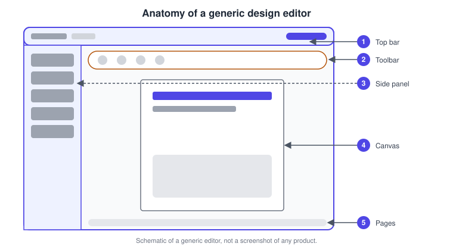
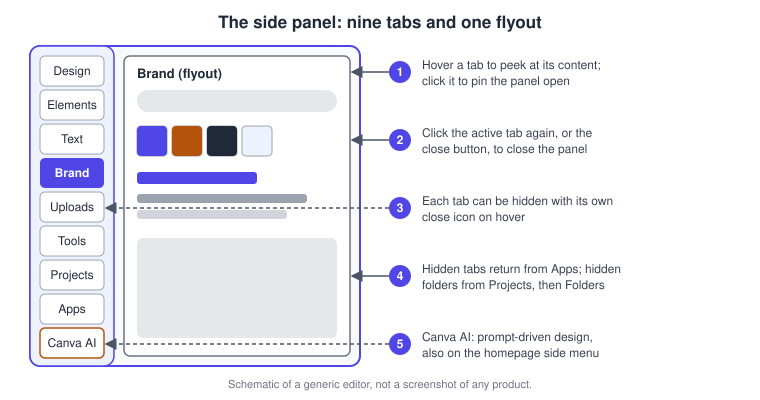
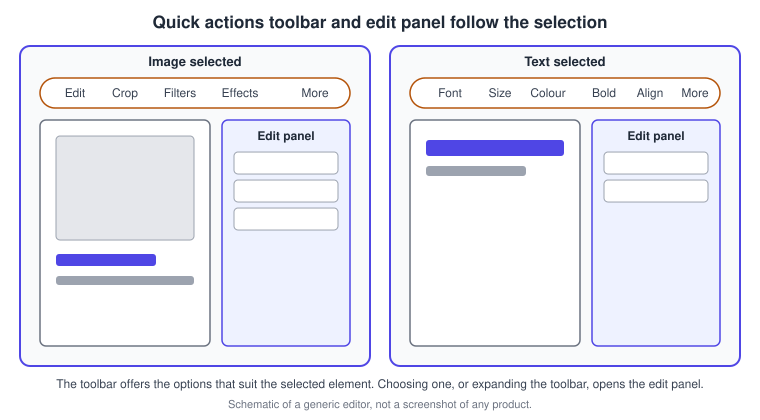
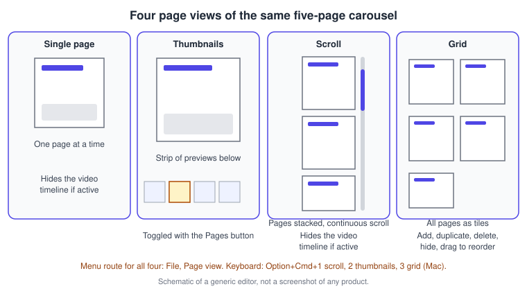
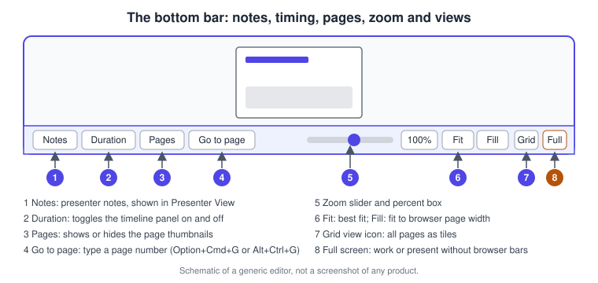
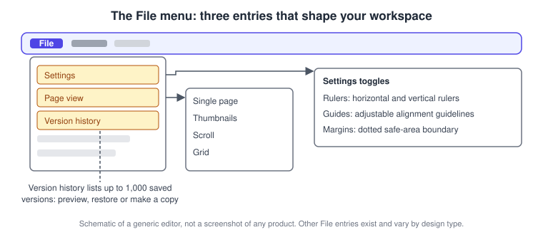
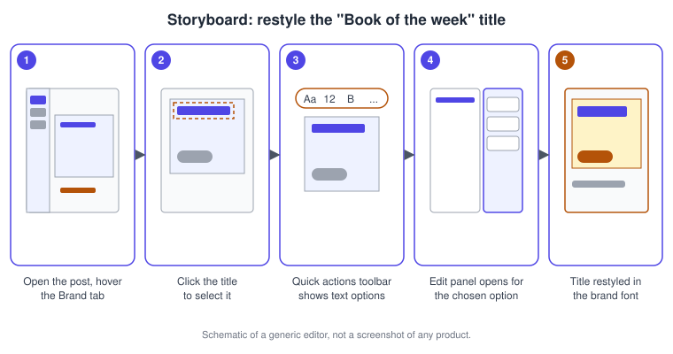
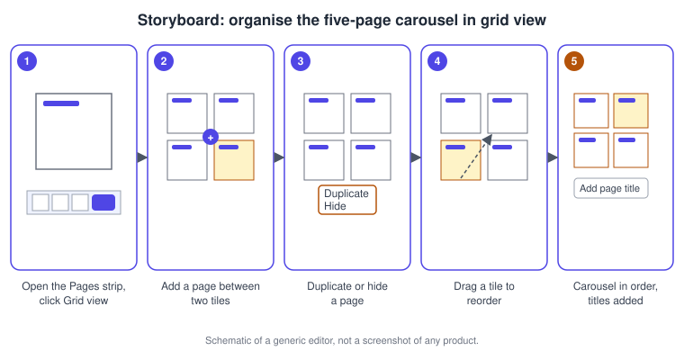
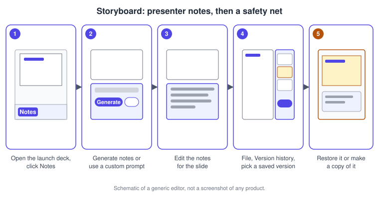

Editor Tour
|
This content was generated with the assistance of AI and should be verified against the official documentation before being relied on in production. |
This page was checked against the official Canva Help Center on 2026-11-07. It describes the editor of Canva (web, desktop app and mobile apps) as it looks after the redesign that Canva calls the "glow up": a quick actions toolbar, an edit panel, a redesigned side panel with hover access, a comment panel and a mode switcher. The editor itself is available on every plan, Free, Pro, Business, Enterprise, Education and Nonprofits; what differs by plan is what you can do inside it. Version history, for example, is limited to paid plans (see below), and Canva AI features draw on an allowance whose tiers (Standard, Premium and Ultra) are explained on Plans, Pricing and AI Allowance. Prices are not repeated here; they are published at https://www.canva.com/pricing/. Everything in the editor tour is generally available. The conversational Canva AI 2.0 tab that sits in the side panel was launched as a research preview on 2026-04-16 and is now documented in the Help Center without a preview label; no general-availability date is published and its availability varies by account, language and region.
Canva is a continuously deployed service, so icons, labels and the order of tabs move between releases and also differ between the full editor, the editor embedded in the homepage and the mobile apps. This page therefore describes locations by name and by shortcut, and its drawings are deliberately schematic: they are original sketches of a generic editor and not screenshots.
The running example is Bookshelf, the book catalogue and reading-list app designed in the Figma sub-section. Its launch campaign is built in Canva across the pages of this sub-section. This tour opens a "Book of the week" Instagram post, finds its tools, restyles the title, organises a five-page carousel and the launch deck, and learns where Canva keeps your safety nets.
The editor in one picture
The editor is made of a top bar (with the File menu, the mode switcher, Share and the other header actions), a side panel on the left, a quick actions toolbar above the selected element, an optional edit panel that opens beside it, the canvas in the middle with your pages, and a bottom bar with notes, page controls and zoom. Comments open in a dedicated comment panel on the right when you need them.

-
The top bar holds the File menu, the mode switcher, Share and account actions.
-
The quick actions toolbar sits above the canvas and changes with the selected element.
-
The side panel on the left lists tabs for templates, elements, text, brand, uploads, tools, projects, apps and Canva AI.
-
The canvas is where your pages live; you select, move and edit elements there.
-
The pages strip and bottom bar let you move between pages, change the page view and zoom.
The side panel
The side panel replaces the older object panel and is the place you add things to a design. The Help Center describes it as a redesigned panel from which you can still reach templates, elements, fonts, the Brand Kit, Draw, the Projects folder and apps. Its tabs, in the order they commonly appear, are the following.
| Tab | What it offers | Notes |
|---|---|---|
Design |
Templates, layouts and styles for the current design type |
Starting point when a design is blank |
Elements |
Graphics, photos, videos, audio, shapes and similar libraries |
Parts of the libraries are paid content |
Text |
Text boxes, font combinations and font styles |
Fonts from your brand kit appear under Brand |
Brand |
The Brand Kit: brand colours, fonts, logos and Brand Templates |
Brand controls set by an administrator can hide or lock items |
Uploads |
Your own images, videos and audio, plus imports |
Covered on Uploads, Stock Media and Imports |
Tools |
Shapes, Lines, Sticky Notes, Draw, Text and Tables |
Not available in Canva Docs; the Draw tab was folded into Tools |
Projects |
Folders, saved designs and uploaded files |
Folders you hide can be restored from Projects, then Folders |
Apps |
Design and productivity apps, including tabs that were moved out of the main list |
Also the place to re-add hidden tabs |
Canva AI |
Chat-based design and editing with Canva AI |
Needs a supported language and region; also on the homepage side menu |
The set of tabs is not the same for every person. Brand controls applied by a team administrator can disable tabs, and the Tools tab is not offered in Canva Docs. In a Whiteboard the Tools tab opens by itself when the board already has content, whereas a blank board opens the Design tab.

Hover, pin, close and toggle
Hovering a tab shows its content in a flyout so that you can peek without committing. Clicking the tab pins the panel open, and clicking the active tab again, or the close button, closes it. The keyboard toggle for opening and closing the side panel is Command + / on macOS and the equivalent Ctrl + / on Windows. Moving focus to the side panel from the keyboard uses Command + F3.
Hide and restore tabs
To tidy the panel you can hide any tab on desktop: hover the tab and select the close icon that appears. Tabs that seem to be missing, such as Photos, Audio, Videos, Background, Charts, Logos and Bulk create, are usually listed inside the Apps tab, and selecting one there adds it back to the side panel. If a tab is in neither place, a brand control set by your team administrators probably disabled it. Hidden folders return from Projects, then Folders, by selecting the folder.
The Tools tab and the Draw tab
The Tools tab gathers Shapes, Lines, Sticky Notes, Draw, Text and Tables in one place. The Help Center states that the Draw function now lives in the Tools tab, and that the consolidation keeps all existing functionality; shapes can still be resized after you add them. Guides to each tool are collected on Drawing and the Tools Tab.
Canva AI in the editor
In an open design, Canva AI appears in the editor side panel. If you do not see it, open Apps (or More, when the editor shows that entry) and search for Canva AI; if it is still missing, the Help Center suggests starting from the homepage side menu, where Canva AI sits next to Create, Projects, Brand and the other entries. It may be unavailable because of the selected language, the country or region, school administration for Education accounts, or team and Enterprise restrictions. Features of Canva AI are available with Pro, Teams, Business and Nonprofit plans, while Free and Education accounts include some AI features such as Magic Write and Background Remover with limited monthly usage; Free accounts can also use Canva AI Connectors as they become available to their account. See the Canva AI assistant page for the assistant itself.
The quick actions toolbar and the edit panel
Before the redesign, a fixed toolbar sat under the header. It is now the quick actions toolbar, which floats near the selection and suggests editing options that suit the selected element. Select an image and it offers photo tools such as cropping, filters and effects; select text and it offers font, size and style. When you choose an option, or expand the toolbar, the edit panel opens next to the canvas with the controls for that option, and a close button dismisses it. Because the toolbar and panel depend on the selection, the quickest way to find a missing control is to select the element first.

Two related features are worth knowing. The quick actions menu of Canva is a different, command-style launcher opened with / or Command + E (Ctrl + E on Windows). The launcher is covered on Keyboard Shortcuts and Quick Actions. On a phone, the toolbar is split in two: a floating toolbar for the selected element, where swiping left and tapping More reveals further options (a long press on the element also works), and a keyboard toolbar above the on-screen keyboard while editing text, where swiping left shows more options, choosing a tool such as text colour closes the keyboard, and the arrow icon expands the menu.
Mode switcher and comment panel
The header of the full editor carries a mode switcher between Editing, Commenting and Viewing for all design types, with an additional Suggesting mode in Canva Docs. It is not offered in the editor embedded on the homepage, and on mobile it sits behind the more icon of the header. Comments open in a dedicated panel that you can expand or hide to give the canvas more room; the panel lets you filter and sort comments and see a full thread at a glance. The collaboration features are described on Collaboration, Comments and Version History.
Pages and the four page views
A Canva design is a sequence of pages, and what you see of them is controlled by the page view. The File menu has a Page view entry with four choices, and the same four views are reachable from the bottom bar and from the keyboard.
| View | What you see | Shortcut (macOS / Windows) |
|---|---|---|
Single page |
One page at a time; hides the video timeline when it is active |
Choose it from File, Page view |
Thumbnails |
The current page with a scrollable strip of page previews below it |
Option + Command + 2 / Alt + Ctrl + 2 |
Scroll |
All pages stacked vertically in a continuous scroll; hides the video timeline when it is active |
Option + Command + 1 / Alt + Ctrl + 1 |
Grid |
All pages as tiles for managing and rearranging many pages at once |
Option + Command + 3 / Alt + Ctrl + 3 |
The Windows combinations replace Command with Ctrl and Option with Alt, which is the convention used by Canva’s own page-view article for Go to page (Option + Command + G on macOS, Alt + Ctrl + G on Windows). In a design that you are editing as a video, choosing Scroll or Single page exits the video timeline and returns you to standard editing; you can return to the timeline from File, Page view, Grid, or by selecting Edit as video, and the Duration button toggles the timeline panel without changing views.

Add, duplicate, delete and rearrange pages
How you manage pages depends on the view. In scrolling view, each page has controls at its upper corner to add, duplicate and delete it, and arrow icons that move it up or down. In thumbnail or grid view you add a page next to the last page or by hovering between pages; you select a page, and hold Command (macOS) or Ctrl (Windows) while clicking to select several. Duplicate pages from the toolbar above the editor, or copy and paste the selected thumbnail with Command + C and Command + V (Ctrl + C and Ctrl + V on Windows). Delete from the toolbar in grid view or from the right-click menu on thumbnails. Rearrange by dragging selected pages to their new position. In grid view you can also hide and unhide pages with the hide and unhide icons. A design can have up to 350 pages; beyond that the Help Center suggests creating a second design and merging the downloads. Keyboard users can add an empty page with Command + Return and delete an empty page with Command + Delete on macOS.
Page titles are helpful when you publish a design as a website: in thumbnail view use the pencil icon next to Add page title in the ellipsis menu, in grid view select the page number under a thumbnail, and in scrolling view type in the Add page title field at the page corner.
The bottom bar: notes, timing, pages and zoom
The bottom bar collects the controls you use all the time while moving around a design. Notes opens the presenter notes area. Duration toggles the timeline panel. Pages shows or hides the page thumbnails and Go to page jumps to a page number. A zoom slider with a percent box controls the magnification; Fit selects the best fit for the pages in the editor and Fill zooms the design to the browser width. A Grid view icon switches to the grid, and a full-screen icon removes the browser toolbars so you can work or present with more room, with a merging-arrows icon to return.

Zoom
Zoom in and out by dragging the slider or by clicking the percent box beside it. The keyboard shortcuts on macOS are Command + + to zoom in, Command + - to zoom out, Command + 0 for actual size, Option + Command + 0 to fit and Shift + Command + 0 to fill; on Windows the same combinations use Ctrl and Alt. In Canva Docs zoom is the only page view setting, and it is not supported on mobile, where you use the device’s own zoom controls. Full-screen mode is available on mobile only to present a design.
Rulers, guides and margins
From File, Settings you can switch three workspace aids on or off: Rulers (horizontal and vertical rulers along the edges), Guides (adjustable guidelines for aligning elements) and Margins (a dotted boundary for safe print or layout margins). Shift + R shows rulers and guides on macOS, and Option + Command + ; locks guides. These aids matter most for print work, which is covered on Print and Mockups.

Notes
Notes hold presenter cues or reminders for each page. They show in Presenter View and when you use Present and record. Open your design, select Notes at the bottom of the editor and either type the notes or have Canva write them: Generate notes creates presenter notes automatically, and Custom prompt lets you type your own instruction before pressing Enter or the arrow button. If notes already exist, clear them before generating new ones. To print the notes, download the design as a PDF through Share, Download, choose PDF, pick the Digital or Print preset and the pages, then open Advanced Settings and switch on Include notes. Whether AI-generated notes are available to you follows the AI availability of your account.
Element timing
Every element on a page has a timing: when it appears and disappears. In a non-video design, right-click an element and choose Show element timing, then drag the trim handles that appear at the element’s edge in the page navigator to change when it starts and how long it lasts; Hide element timing removes the bars. Element timing controls individual elements, while slide duration controls how long the entire page displays. In video designs Show element timing is not offered because the video timeline at the bottom of the editor does that job; presentations can additionally use on-click animations. Animation and the video editor are covered on Animation and Transitions and Video Editor, Audio and Captions.
Undo, redo and version history
Undo is Command + Z on macOS and Ctrl + Z on Windows, and Redo is Command + Y or Shift + Command + Z (Ctrl + Y and Ctrl + Shift + Z on Windows). Designs are saved as you work, and Command + S is also listed in the shortcuts. For bigger rewinds use version history: from the File menu choose Version history, select a saved version to compare it, and then Restore it or Make a copy. You can restore up to 1,000 previous versions with no time limit on how long they are kept, but you must be the design owner or have edit access, and the full feature is available to Canva Pro, Teams, Business, Education and Nonprofit users; Free accounts do not have version history. Entries labelled Canva AI appear when AI features are used in a design; they use a generic label rather than a tool name and can look like duplicates next to your own edits, but they can be previewed, restored or copied like any other version. Version history restores earlier states of a design that still exists, while Trash recovers a design that was deleted entirely.
Essential shortcuts
The Help Center lists shortcuts for macOS in the primary view and gives Windows equivalents with Ctrl instead of Command and Alt instead of Option. The ones that matter for navigating the editor are collected here.
| Action | macOS | Windows |
|---|---|---|
Undo |
Command + Z |
Ctrl + Z |
Redo |
Command + Y or Shift + Command + Z |
Ctrl + Y or Ctrl + Shift + Z |
Quick actions |
/ or Command + E |
/ or Ctrl + E |
Toggle the side panel |
Command + / |
Ctrl + / |
Show layers |
Option + 1 |
Alt + 1 |
Go to page |
Option + Command + G |
Alt + Ctrl + G |
Zoom in or out |
Command + + or Command + - |
Ctrl + + or Ctrl + - |
Zoom to fit |
Option + Command + 0 |
Alt + Ctrl + 0 |
Scroll, thumbnails and grid views |
Option + Command + 1, 2, 3 |
Alt + Ctrl + 1, 2, 3 |
Toggle duration |
Option + D |
Alt + D |
Presentation mode |
Option + Command + P |
Alt + Ctrl + P |
Add-element shortcuts are single letters: T for text, R for a rectangle, L for a line, C for a circle and S for a sticky note. The desktop app adds shortcuts of its own for tabs, such as Command + T for a new design, Command + W to close the current tab and Command + 1 to 8 to switch between design tabs. Because the Help Center page shows the macOS keys by default, check the Windows tab of the article when a combination does not respond on your machine.
Desktop, browser and mobile
The editor in a browser, in the Windows or macOS desktop app and on the mobile apps share the same ideas but not the same surface. The desktop app adds design tabs, its own window shortcuts and an interface zoom. Mobile apps (named Canva Classic and Canva Lite) have a bottom navigation with Canva AI, Create, Templates, Your Designs and More tabs; in a design, the floating toolbar, the keyboard toolbar, the more icon in the header for the mode switcher, thumbnail pages and the device’s own zoom replace several desktop controls. Several features in this tour, such as hiding tabs, are listed as desktop-only in the Help Center. See Desktop, Mobile and Offline for the differences in depth.
Procedures on the Bookshelf campaign
Restyle the "Book of the week" title
-
Open the Bookshelf Book of the Week Instagram post from the homepage or from Projects.
-
Hover the Brand tab in the side panel to peek at the brand colours and fonts, or click it to pin the panel open.
-
Click the title text on the canvas to select it.
-
In the quick actions toolbar, choose the font control and select the Bookshelf heading font.
-
If you need more controls, expand the toolbar so that the edit panel opens; adjust size, spacing or effects there and close the panel when you are done.
-
Press Command + Z (Ctrl + Z on Windows) if a change is not right.

Organise the five-page carousel
-
Open the Bookshelf Launch Carousel design, which has five pages.
-
At the bottom of the editor, select the Grid view icon, or press Option + Command + 3 (Alt + Ctrl + 3 on Windows).
-
Hover between two pages and select Add page to insert a new one; use the More icon on a page to duplicate it.
-
Drag a page tile to its new position. Use the hide icon on a page you want to keep out of the export.
-
Select the page number under a tile to type a page title.
-
Double-click any page, or select the close grid view icon, to return to the editor.

Add presenter notes to the launch deck and keep a safety net
-
Open the Bookshelf Launch Deck presentation and go to its first slide.
-
Select Notes at the bottom of the editor.
-
Select Generate notes, or Custom prompt and describe the tone you want, then press Enter.
-
Edit the generated text so it matches your talk.
-
Open File, then Version history, and pick a saved version to compare.
-
Select Restore to return to it, or Make a copy to keep both.

Common pitfalls
-
A missing tab is usually hidden, not removed: check Apps first, then ask your administrators if a brand control applies.
-
The Tools tab does not exist in Canva Docs, and zoom is the only page view setting there.
-
Choosing Scroll or Single page from a video design leaves the video timeline; re-enter it from the grid view or Edit as video.
-
The quick actions toolbar changes with the selection. If a tool vanishes, select the right element again.
-
Version history needs ownership or edit access and a paid or Education or Nonprofit account; view and comment access cannot open it.
-
A design is limited to 350 pages.
-
Grid view and thumbnails show previews only; edit in the single or scrolling view.
Where older guides are outdated
Books and tutorials written before the redesign describe a different editor. The table lists the statements that no longer hold and when each changed.
| Older statement | Current behaviour | Date |
|---|---|---|
A fixed toolbar above the canvas and a separate Draw tab |
A floating quick actions toolbar, an edit panel and a Draw function inside the Tools tab |
Glow-up redesign |
Magic Studio is the umbrella of Canva’s AI |
Canva AI is a chat-based assistant with its own side panel tab; Magic tool names survive for individual tools |
Canva AI 2.0 research preview, 2026-04-16 |
A separate old photo editor with effect apps |
One photo editor in the editor, with features reorganised across Tools, Filters and Shadows |
2024-04-26 |
Teams is the third plan |
Canva Business replaced Teams for new sign-ups |
2025-10-30 |
Recent changes
-
2024-04-26: the old photo editor was retired in favour of the new photo editor, with effects reorganised under Tools, Filters and Shadows.
-
2025-04-11: Visual Suite 2.0 added Sheets, Canva Code and Photo Editor as part of the Visual Suite.
-
2026-04-16: Canva AI 2.0 launched as a research preview; the Help Center now documents Canva AI in the editor side panel.